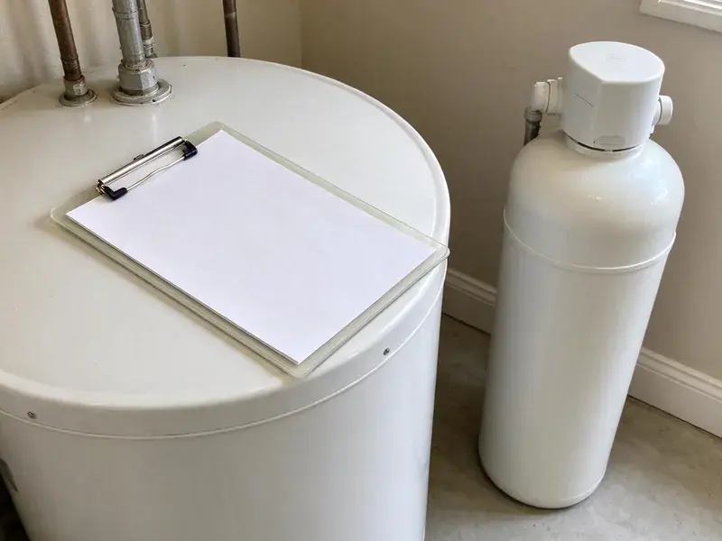

Drainage Services in Logan, UT
Keep your drains moving with drainage service from BPK Plumbing in Logan, UT. We clear, inspect and repair.
- Yard & Storm Drainage
- Skilled Technicians
- Fast Drainage Repair
- Upfront Pricing

Fix the Clog or the Soggy Yard for Good in Logan, UT.
Standing water and slow drains only get worse. Call (385) 543-4073.
Drainage Services in Logan, UT
Drainage problems in Logan, UT tend to show up in two places, the pipes and the yard. Basements are common in Utah homes, which places water heaters, softeners and main drains below grade where slow leaks can go unnoticed. It can crack sewer pipe and steer water toward the house, so we check both. Most calls start indoors.
Our expertise includes:
- French drains, channel drains and pop-up outlets for yard runoff
- Storm drain and French drain installation
- Sewer camera inspections with locating

Additional Plumbing Maintenance Services in Logan, UT
Our maintenance and specialty plumbing services in Logan, UT protect your home year-round and extend the life of every system.


Customers
Why Choose BPK Plumbing for Drainage Services in Logan, UT?
Good drainage is invisible when it works. What you pay for is a clear sewer and a dry yard. Our yard drains use rigid PVC, which holds up under traffic and can be jetted.
- Right Equipment, Cable machines, jetters, cameras and locators let us fix the cause instead of guessing.
- Licensed & Insured, Every plumber we send is licensed and insured.
- Advanced Tools, Our trucks carry sewer cameras and jetters to find and clear the problem.
Citywide Coverage
Wherever you are in Logan, we can usually clear an indoor line the same day or schedule a yard visit within the week. Yard visits work best after rain. Seeing where water actually stands and which downspouts overflow tells us more in ten minutes than a dry walk-around does in an hour.
Experienced Team
Our drain technicians run hundreds of drain calls every year. Roots feel different on a cable. They can tell from the camera image whether a line is cast iron with heavy scale, clay with offset joints or PVC with a belly, and they explain what that means for your house in plain words.
Safety-First Approach
Jetting and cable equipment is run by trained technicians in protective gear. We ask if chemicals went down first. Caustic cleaner in a trap can burn skin and eyes, so we flush it out before we cable.
Trusted Certified Logan Plumbing Services Professionals
At BPK Plumbing, we take pride in licensed, certified plumbing services throughout Logan, UT. Credentials matter in this trade. Our plumbers hold recognized industry credentials, and they follow strict safety and quality rules on every repair, installation and maintenance call we run.
Call Us Now PHCC Plumbing Contractor Recognition
PHCC Plumbing Contractor Recognition Better Business Bureau (BBB) Accreditation
Better Business Bureau (BBB) Accreditation Angi Certified Pro
Angi Certified Pro ISO 9001 Quality Management Certification
ISO 9001 Quality Management CertificationIndoor and Outdoor Drainage in Logan, UT
Hydro-Jetting Services in Logan
A hydro jetter sends water at several thousand psi through a nozzle that scours the full pipe wall. Unlike a cable, the jet cleans the whole pipe wall, not just a hole through the clog. Restaurants need it most. We camera the line first to make sure the pipe is sound enough to jet.

Storm Drain and French Drain Installation in Logan, UT
Heavy downpours expose every low spot in a yard. Summer thunderstorms can bring sudden flash floods, especially in canyons and on steep slopes where runoff moves fast. We install catch basins at the low points and run solid PVC to a legal outlet, sized so the pipe carries the water from a hard storm rather than backing up into the basin. Outlets need daylight or a dry well.
Preventive Drain Maintenance in Logan, UT
Scheduled drain cleaning costs less than one emergency call. We set up maintenance plans for homes with root-prone sewers, older cast iron or a history of kitchen clogs, with a camera check every visit so we can track the line over time. We keep the video on file. Comparing it year to year shows whether roots are growing back faster.
Commercial Drainage Solutions in Logan
Businesses in Logan can lose a day of sales to one backed-up floor drain. We service floor drains, trench drains, grease lines and parking lot catch basins, and we schedule the work before opening or after close when we can. Scheduled jetting stops most emergency calls.
Main Line and Sewer Drainage in Logan, UT
Water coming up in the tub when the washer drains is a classic main line symptom. The lowest drain in the house shows the backup first. After clearing and camera work, we show you where the problem sits and how deep.
Emergency Drainage Services in Logan, UT
Sewage coming up a floor drain needs attention right away. Stop running water in the house. The on-call plumber clears the main, cameras it and explains the repair if the pipe is broken.
Sewer Line Repair and Replacement in Logan, UT
Sewer laterals fail from roots, settling, or plain age. Older clay and cast iron sewers crack at the joints, which lets roots in. We camera the line, locate the damage from the surface, and price a spot repair, a full replacement, or trenchless lining where the pipe is a good candidate. You pick.

Downspout and Roof Drain Solutions in Logan
Gutters concentrate a lot of roof water into a few points, often right next to the foundation. Basements are common in Utah homes, which places water heaters, softeners and main drains below grade where slow leaks can go unnoticed. We pipe downspouts underground in solid PVC to a pop-up emitter or dry well well away from the house, with a cleanout at the base so the line can be flushed. One inch of rain on 1,000 square feet of roof is about 600 gallons. That is a lot of water.
Drain Plumbers Near Me in Logan, UT
A drainage company down the road from you knows the local sewer layout. Older blocks often have clay laterals and shared cleanouts. Newer tracts tend to have PVC sewers and flatter yards with rear-lot swales that get filled in by landscaping, which sends water toward the house. We know both.
Nearby plumbers can come back for a follow-up camera run without charging a long trip fee. That follow-up is part of our process. A year after root cutting, a quick camera run shows whether repair or maintenance is the better path.
BPK Plumbing at a Glance
- Licensed and insured plumbers serving Logan, UT
- 24/7 emergency service with same-day scheduling
- Clear written estimates, no hidden fees
- 4.8-star rated by 470+ Utah customers
Logan Map
Logan Information
- Population
- 55,250
- Area codes
- 435/385/801
- Service area
- Logan and communities within 40 miles
- Nearby
- Ogden, Layton, Salt Lake City, Millcreek
Drainage in Logan, UT needs to be sized for the big storms. Summer thunderstorms can bring sudden flash floods, especially in canyons and on steep slopes where runoff moves fast. Pipe and drain sizes are picked with that in mind.
Expert Services
Call BPK Plumbing for honest, reliable plumbing from people who know the trade in Logan, UT.
Our Specialized Plumbing Services in Logan, UT
At BPK Plumbing, you get every kind of plumbing service from one company across Logan, UT. From leak detection to full system installs, our team works fast and charges fair prices on homes and commercial properties alike. Take a look at our core services below:


The Drainage Process in Logan, UT
Each drainage job follows the same steps, from first call to final flow test.
Request a Quote
Call (385) 543-4073 and tell us if it is an indoor drain or outdoor water. We schedule a visit.
Inspect and Plan
We clear and camera indoor lines or walk the yard to study slope and runoff.
Clear or Install
Our crew clears the line or installs the new drainage. We test it with running water.
Frequently Asked Questions About Drainage Services in Logan
Most basic drain clearing in Logan, UT runs $150 to $500. A main line costs more than a sink. Jetting costs more than cabling, and sewer repairs run from a few thousand for a spot fix to much more for replacement.
Snaking is the right first step for most single clogs. It costs less and takes less time. Jetting wins for grease, scale and recurring roots since it cleans the whole wall.
Watch for water pooling near the house after storms. Mulch washing onto the walk is another sign. Inside, a damp crawlspace, a musty basement or efflorescence on the foundation wall all mean water is reaching the house instead of being carried away, and the problem usually starts at a downspout or a low spot.
Sometimes. It depends on your jurisdiction. Some jurisdictions register dry wells. Distance rules from buildings and septic fields are common, so we check your local rules first.
Clearing a clog does not need a permit. Pipe repairs often require one. Sewer section replacements and new cleanouts generally need a permit, which we handle.
We advise against it. Caustic cleaners can soften old PVC joints and eat at cast iron and metal traps. When they fail, the trap stays full of caustic liquid that the plumber has to deal with carefully.
They solve different problems. French drains handle water moving through soil. Channel drains catch surface water on concrete, and plenty of yards need both.
Most homes never need scheduled drain cleaning. Clean them when they slow down. Homes with root-prone sewers, old cast iron, or a kitchen that sends a lot of grease down the drain do better with a cleaning every 12 to 24 months, timed before the line slows to a crawl.
What People Are Saying About Our Plumbing Experts?

Jessica T.
We were adding a gas range in a kitchen remodel and needed a new line run from the meter. The plumber pulled the permit, ran the pipe through the crawl space, and had it inspected and approved within the week.
Gas Line Repair · Taylorsville, UT
Rachel N.
Hard water was leaving white crust on every faucet and our dishwasher was struggling. The tech tested the water, recommended a softener sized for a family of five, and installed it with a bypass valve in one afternoon. The spots on our glasses are gone.
Water Softener · West Valley City, UT
James P.
Our restaurant had a slow leak at the hand sink that was rotting the cabinet base. BPK Plumbing came in at six in the morning before prep, replaced the trap and both supply lines, and was packed up before my first cook clocked in.
Commercial Plumbing · Taylorsville, UT
Greg S.
I manage a small strip center with six tenants. BPK Plumbing handles our annual backflow testing and fixed a recurring clog in the shared sewer line that had been backing into the nail salon. Their reports come in clean and on time.
Commercial Plumbing · Millcreek, UTMarcus H.
Grease from the fryer line kept clogging the kitchen drain at my diner. BPK Plumbing hydro jetted the line after closing, showed me the buildup on camera, and set us up on a quarterly cleaning so it does not catch us on a Friday again.
Drain Cleaning · Millcreek, UTLisa C.
Water was pouring out from under the washing machine on a holiday weekend. BPK Plumbing talked me through closing the valves over the phone and had a plumber at the house within ninety minutes. It was a burst fill hose.
Emergency Plumbing · Millcreek, UT